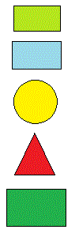

<map id="computer-map" name="computermap">
  <area shape="rect" coords="1,1,100,100" alt="Computer" href="javascript:alert('Computer screen was clicked');">
  <area shape="rect" coords="262,218,0,156" alt="Keyboard" href="javascript:alert('Computer keyboard was clicked');">
  <area shape="circle" coords="267,234,22" alt="Mouse" href="javascript:alert('Computer mouse was clicked');">
</map>